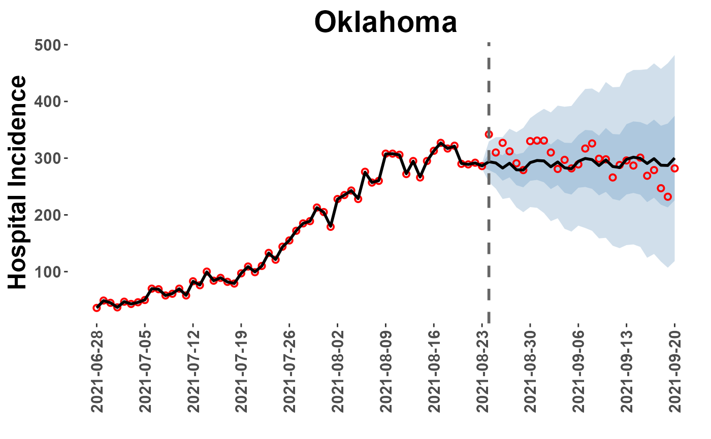
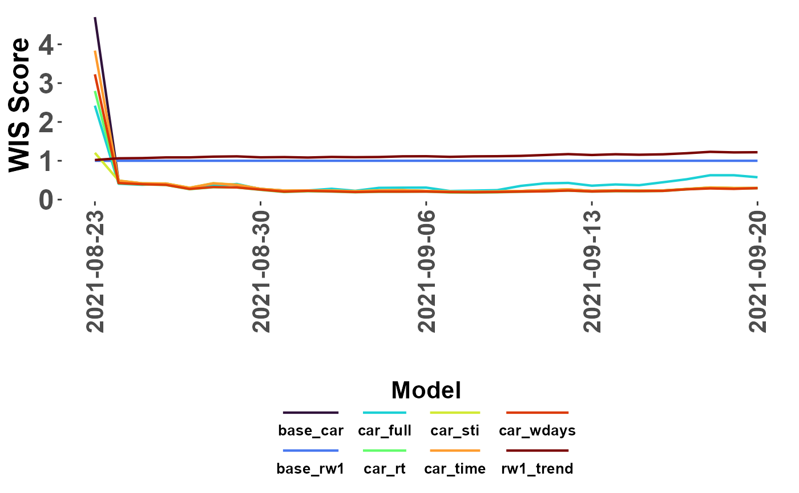
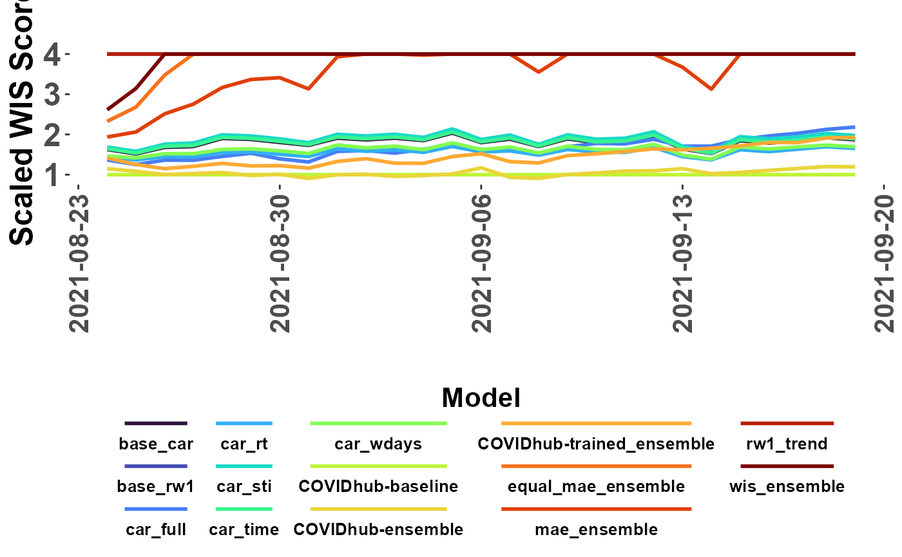

Overview
This introduction briefly outlines core functions used to preprocess observation data, build spatial-temporal models, and post-process model outputs. Its purpose is to demonstrate a standard workflow not to provide an in depth examination of functions or model building techniques.
Preliminaries
Load needed packages
A few of these packages are not available on CRAN and will need to be
installed from other locations.
#comments and prompts
options(dplyr.summarise.inform = FALSE)
library(cli)
#wrangling
library(tidyverse)
library(lubridate)
library(arrow)
library(Hmisc)
library(yaml)
#spatial manipulation
library(sp)
library(sf)
library(spdep)
library(rgeos)
library(igraph)
library(maptools)
library(mapproj)
#census data
library(censusapi)
#forecast data
library(zoltr) #Not available on CRAN
#remotes::install_github("reichlab/zoltr")
library(covidHubUtils) #Not available on CRAN
#remotes::install_github("reichlab/covidHubUtils")
#inference
library(INLA) #Not available on CRAN
#install.packages("INLA",repos=c(getOption("repos"),
#INLA="https://inla.r-inla-download.org/R/stable"), dep=TRUE)
library(EpiEstim)
library(forecast)CovidCAR currently on GitHub
Setup Analysis
Specifiy Dates and Directories
The setup_analysis() function defines key date thresholds for model training and forecast horizon periods and should always be run before using any other functions in the CovidCAR package. The dates are written to a yaml file for use by other functions.
The function also allows for recording directory paths to (optionally) write outputs outside of the working directory or to pull previously cached observation data (cache as created with Covid19Forecast.v1).
my_ouputs <- "C:/Users/unp7/Desktop/Misc/CovidCAR_tests"
my_local <- "C:/Users/unp7/Desktop/GitHub/covid19Forecasts/local/cache"
setup_analysis(report_date = "2021-08-23", #report date, first forecast day
training_period = 2*28, #days
forecast_horizon = 28, #days
output_dir = my_ouputs, #write outputs here
local_cache_dir = my_local #cache
)## → Your local cache will be available to get_covid19_obs()## → Analysis outputs will be written to C:/Users/unp7/Desktop/Misc/CovidCAR_tests/2021-08-23-CovidCAR-run2023-05-25Define Spatial Domain
The download_boundaries() function pulls US State and territorial boundaries (ESRI shapefiles) from sources in the public domain. Some basic projection is performed, the shapefile is converted to a SpatialPolygonsDataFrame, and data attributes for a location identifier (‘Region’) and name (‘State’) are appended to the object.
NOTE: The function includes an option to download county boundaries (unit=“county”) but there are some timeout issues that need to be resolved due to large file size.
States <- download_boundaries(unit = "state")## → Downloading polygon files...## Reading layer `us-state-boundaries' from data source
## `C:\Users\unp7\Desktop\Misc\CovidCAR_tests\2021-08-23-CovidCAR-run2023-05-25\polygons'
## using driver `ESRI Shapefile'
## Simple feature collection with 56 features and 20 fields
## Geometry type: MULTIPOLYGON
## Dimension: XY
## Bounding box: xmin: -179.2311 ymin: -14.60181 xmax: 179.8597 ymax: 71.44069
## Geodetic CRS: WGS 84
class(States)## [1] "SpatialPolygonsDataFrame"
## attr(,"package")
## [1] "sp"## Region State
## 1 1 Puerto Rico
## 2 2 Northern Mariana Islands
## 3 3 Arkansas
## 4 4 West Virginia
## 5 5 Rhode Island
## 6 6 WashingtonAdjacency Graph
The get_neighbors() function is used to identify polygons (States and Territories in this example) that are located next to each other. Neighbor information is recorded in a matrix (dimensions: location*location) that is included with the CAR model. Estimates for any one location are then ‘conditional’ on the estimates for surrounding locations.
NOTE: Polygons representing locations such as Hawaii and Guam are isolated from other locations (termed ‘islands’) and can be problematic. One option in this situation is to force connections between locations; the function’s ‘connect’ option will force connections between islands and other locations based on proximity.
Example: Islands with “no links”
nb_islands = get_neighbors(States, connect=FALSE)
summary(nb_islands) #note that "7 regions with no links"## Neighbour list object:
## Number of regions: 56
## Number of nonzero links: 224
## Percentage nonzero weights: 7.142857
## Average number of links: 4
## 7 regions with no links:
## 1 2 17 19 20 33 50
## Link number distribution:
##
## 0 1 2 3 4 5 6 7 8
## 7 1 4 9 9 10 12 2 2
## 1 least connected region:
## 52 with 1 link
## 2 most connected regions:
## 12 36 with 8 linksExample: All locations linked
nb_coerced = get_neighbors(States, connect=TRUE)
summary(nb_coerced)## Neighbour list object:
## Number of regions: 56
## Number of nonzero links: 242
## Percentage nonzero weights: 7.716837
## Average number of links: 4.321429
## Link number distribution:
##
## 1 2 3 4 5 6 7 8
## 5 3 10 12 10 11 3 2
## 5 least connected regions:
## 17 19 20 50 52 with 1 link
## 2 most connected regions:
## 12 36 with 8 linksView mapped adjacency
The plot_neighbors() function overlays adjacency connections on
mapped location boundaries.
plot_neighbors(States, nb_islands)## Regions defined for each Polygons
plot_neighbors(States, nb_coerced)## Regions defined for each PolygonsConvert to INLA Graph The nb2INLA() and inla.read.graph() functions are provided by the INLA package.
nb2INLA("J", nb_coerced)
J = inla.read.graph("J")Retrieve Observation Data
The get_covid19_obs() function downloads hospital incidence data for a specified data range.
The source options for data to be retrieved:
- The covidcast package
- From a local cache as created by the
covid19Forecasts package (i.e., refactored pipeline
pkg)
- From test data available from the package itself (sample from summer 2021)
MinDate = min(su_yaml$full_time_span)
MaxDate = max(su_yaml$full_time_span)
testData = get_covid19_obs(source = "covidcast",
start_date = MinDate, end_date = MaxDate,
write_copy = TRUE)
#testData = get_covid19_obs(source = "cache", start_date = MinDate, end_date = MaxDate)
#testData = get_covid19_obs(source = "test", start_date = MinDate, end_date = MaxDate)
dim(testData)## [1] 4534 5
head(testData)## date value signal location location_name
## 1 2021-06-28 2 hosp 02 Alaska
## 2 2021-06-28 29 hosp 01 Alabama
## 3 2021-06-28 55 hosp 05 Arkansas
## 4 2021-06-28 75 hosp 04 Arizona
## 5 2021-06-28 201 hosp 06 California
## 6 2021-06-28 60 hosp 08 ColoradoAdd Spatial Index
The append_region_index() function matches location names in
the observation data to the Region index in the polygon
boundaries object, which also corresponds with the adjaceny matrix. The
Region index is added as a column to the observations as is a new
trn_tst column that is coded with either a
trn or tst nominal indicator to
distinguish time periods used for model training (observed) and testing
(not observed).
train_data = append_region_index(train_data = testData, polys = States)
which(is.na(train_data$Region))## integer(0)Forecast Template
The create_forecast_template() function ensures that each location-time combination in the analysis is represented in the data ingested by the model. In the case of model runs using only historic observations, this function basically returns the original input but with some column names adjusted. This because the full date range was already represented. However, in the case of future dates where observations are not yet available, this function will add a row for each day through the forecast horizon coding the observed incidence value as NA as a placeholder.
train_data = create_forecast_template(train_data)Additional Covariates
Demo models in this example are fairly simple but in many cases users will want to add additional predictors, signals, or covariates (independent variables). This section of the script demonstrates how to (1) pull and add demographic variables from the American Community Survey (ACS) and how to (2) add Rt estimates generated from the EpiEstim package.
Demographic Data
The getPovertyPop() function provides a wrapper function for the getCensus package for loading American Community Survey (ACS) data from the U.S. Census Bureau. In this example, an API key (‘secret_api’) is used to pull the percent of each state’s total population in poverty (SAEPOVRTALL_PT) and the number of individuals over the age of 55yrs (given in the vars_pop option).
PovPop_data = getPovertyPop(key = get_api("censusapi"), #function reads 'secrets.yaml' for specified name
vars_pov = c("SAEPOVRTALL_PT"),
vars_pop = c('AGEGROUP','POP'),
filt_age = c(12,18))
train_data = left_join(train_data, PovPop_data, by = "location")Rt Estimation
The Rt_projection() function combines the estimate_R() function from the EpiEstim package with simple timeseries models to forecast Rt estimated over the model training period across the forecast horizon (28 days in the future). Both the ‘raw’ Rt estimate (‘Rt_raw’) for the observation period only and the forecast values (‘Rt’) are added to the dataframe.
Forecast models include:
- simple ARIMA model using the forecast package
(method=“arima”)
- an order-2 random walk with noise and trend using the INLA package (method=“dlm)
NOTE: This is an experimental function and the “dlm” method is used as an example. Models later in this demo will use the Rt_raw value to forecast concurrently with incidence estimation.
Rt_df = Rt_projection(train_data, mean_si = 5.7, std_si = 2,
forecast_horizon = 28, method = "dlm")Rt Estimates
Checking Rt_projection() results
Rt_df[1:10,] #check values## date value signal location location_name day trn_tst Region
## 1 2021-06-28 2 hosp 02 Alaska Monday train 20
## 2 2021-06-29 5 hosp 02 Alaska Tuesday train 20
## 3 2021-06-30 2 hosp 02 Alaska Wednesday train 20
## 4 2021-07-01 6 hosp 02 Alaska Thursday train 20
## 5 2021-07-02 3 hosp 02 Alaska Friday train 20
## 6 2021-07-03 7 hosp 02 Alaska Saturday train 20
## 7 2021-07-04 3 hosp 02 Alaska Sunday train 20
## 8 2021-07-05 2 hosp 02 Alaska Monday train 20
## 9 2021-07-06 5 hosp 02 Alaska Tuesday train 20
## 10 2021-07-07 4 hosp 02 Alaska Wednesday train 20
## SAEPOVRTALL_PT age_pop Rt_raw Rt
## 1 9.6 184927 NA NA
## 2 9.6 184927 NA NA
## 3 9.6 184927 NA NA
## 4 9.6 184927 NA NA
## 5 9.6 184927 NA NA
## 6 9.6 184927 NA NA
## 7 9.6 184927 NA NA
## 8 9.6 184927 3.295300 3.272158
## 9 9.6 184927 2.304267 2.334909
## 10 9.6 184927 1.858476 1.848646## date value signal location location_name day trn_tst Region
## 1 2021-08-24 15 hosp 02 Alaska Tuesday test 20
## 2 2021-08-25 33 hosp 02 Alaska Wednesday test 20
## 3 2021-08-26 18 hosp 02 Alaska Thursday test 20
## 4 2021-08-27 21 hosp 02 Alaska Friday test 20
## 5 2021-08-28 14 hosp 02 Alaska Saturday test 20
## 6 2021-08-29 19 hosp 02 Alaska Sunday test 20
## 7 2021-08-30 32 hosp 02 Alaska Monday test 20
## 8 2021-08-31 22 hosp 02 Alaska Tuesday test 20
## 9 2021-09-01 22 hosp 02 Alaska Wednesday test 20
## 10 2021-09-02 23 hosp 02 Alaska Thursday test 20
## SAEPOVRTALL_PT age_pop Rt_raw Rt
## 1 9.6 184927 NA 1.018212
## 2 9.6 184927 NA 1.051603
## 3 9.6 184927 NA 1.084992
## 4 9.6 184927 NA 1.118382
## 5 9.6 184927 NA 1.151771
## 6 9.6 184927 NA 1.185161
## 7 9.6 184927 NA 1.218551
## 8 9.6 184927 NA 1.251941
## 9 9.6 184927 NA 1.285331
## 10 9.6 184927 NA 1.318721Organize Data
Model parameters, inputs, and covariates will vary from model-to-model and user-to-user but ultimately all need to be combined in a single object that can be ingested by the the inference software, INLA in this case. The code below modifies the train_data dataframe to perform any desired scaling and to add several spatial and temporal indices.
Ordered integers are used as indices to define timesteps (days, weeks, etc), locations (‘Region’), and space*time combinations (e.g., ‘ID.Region.Wk’ in the next chunk). The modeling approach is hierarchical, so some indices may be used in multiple levels. But, each index name must be unique therefore some indices are copied and given slighly different names.
Once data is organized, it is reformatted as a list object called a ‘datastack’ that is passed to the inference software. Although a daraframe might be more intuitive, a list object is used so that model inputs can be of different lengths.
Clean Dataframe
The time_index() function is used to recode a date vector to the desired timestep duration (2-day steps, 1 week steps, etc).
train_data <- as.data.frame(Rt_df) %>%
mutate(
s_pop = log(age_pop), #log scale
s_pov = as.numeric(scale(SAEPOVRTALL_PT)), #some NAs present.
doy = as.integer(as.factor(date)),
doy.1 = doy,
Region.Wk = paste0("ID", Region, "W", doy), #unique Region*doy combinations ('space-time interaction')
ID.Region.Wk = as.integer(as.factor(Region.Wk)), #convert factor levels to integer
week = week(date),
int_week.1 = as.integer(as.factor(week)),
int_week.2 = int_week.1,
int_week.3 = int_week.1,
threeday_indx = time_index(date, seq(min(date), max(date), by = "3 days")),
threeday_indx.1 = as.integer(as.factor(threeday_indx)),
fourday_indx = time_index(date, seq(min(date), max(date), by = "4 days")),
fourday_indx.1 = as.integer(as.factor(fourday_indx)),
fiveday_indx = time_index(date, seq(min(date), max(date), by = "5 days")),
fiveday_indx.1 = as.integer(as.factor(fiveday_indx)),
eightday_indx = time_index(date, seq(min(date), max(date), by = "8 days")),
eightday_indx.1 = as.integer(as.factor(eightday_indx)),
biweek_indx = time_index(date, seq(min(date), max(date), by = "14 days")),
biweek_indx.1 = as.integer(as.factor(biweek_indx)),
Region.1 = Region, Region.2 = Region, Region.3 = Region,
Region.4 = Region, Region.5 = Region
) %>%
select(c(-biweek_indx, threeday_indx, fourday_indx, fiveday_indx, eightday_indx))
head(train_data)## date value signal location location_name day trn_tst Region
## 1 2021-06-28 2 hosp 02 Alaska Monday train 20
## 2 2021-06-29 5 hosp 02 Alaska Tuesday train 20
## 3 2021-06-30 2 hosp 02 Alaska Wednesday train 20
## 4 2021-07-01 6 hosp 02 Alaska Thursday train 20
## 5 2021-07-02 3 hosp 02 Alaska Friday train 20
## 6 2021-07-03 7 hosp 02 Alaska Saturday train 20
## SAEPOVRTALL_PT age_pop Rt_raw Rt s_pop s_pov doy doy.1 Region.Wk
## 1 9.6 184927 NA NA 12.12772 -0.8064822 1 1 ID20W1
## 2 9.6 184927 NA NA 12.12772 -0.8064822 2 2 ID20W2
## 3 9.6 184927 NA NA 12.12772 -0.8064822 3 3 ID20W3
## 4 9.6 184927 NA NA 12.12772 -0.8064822 4 4 ID20W4
## 5 9.6 184927 NA NA 12.12772 -0.8064822 5 5 ID20W5
## 6 9.6 184927 NA NA 12.12772 -0.8064822 6 6 ID20W6
## ID.Region.Wk week int_week.1 int_week.2 int_week.3 threeday_indx
## 1 795 26 1 1 1 2021-06-28
## 2 806 26 1 1 1 2021-06-28
## 3 817 26 1 1 1 2021-07-01
## 4 828 26 1 1 1 2021-07-01
## 5 839 27 2 2 2 2021-07-01
## 6 850 27 2 2 2 2021-07-04
## threeday_indx.1 fourday_indx fourday_indx.1 fiveday_indx fiveday_indx.1
## 1 1 2021-06-28 1 2021-06-28 1
## 2 1 2021-06-28 1 2021-06-28 1
## 3 2 2021-06-28 1 2021-06-28 1
## 4 2 2021-07-02 2 2021-07-03 2
## 5 2 2021-07-02 2 2021-07-03 2
## 6 3 2021-07-02 2 2021-07-03 2
## eightday_indx eightday_indx.1 biweek_indx.1 Region.1 Region.2 Region.3
## 1 2021-06-28 1 1 20 20 20
## 2 2021-06-28 1 1 20 20 20
## 3 2021-06-28 1 1 20 20 20
## 4 2021-06-28 1 1 20 20 20
## 5 2021-06-28 1 1 20 20 20
## 6 2021-07-06 2 1 20 20 20
## Region.4 Region.5
## 1 20 20
## 2 20 20
## 3 20 20
## 4 20 20
## 5 20 20
## 6 20 20Response Variable
The response variable may differ between models. In this case, copying hospital incidence (counts) to a new column, standardizing the distribution, and ensuring that observations for the forecast horizon are coded as NA. Retaining the scaling object and rewriting as function obs_scale() to transform model outputs back to the observation scale later.
Again, response variables are specific to individual model setup so could be scaled differently or not at all to be fit with a different likelihood (Poisson, NegBinomial, etc). Keeping it simple here.
train_data$resp = ifelse(train_data$trn_tst == "train", train_data$value, NA) #Set obs value to NA for forecasts periods
resp_scale_obj = scale(train_data$resp, scale=T, center=T) #scaled object
obs_scale = function(r)r*attr(resp_scale_obj,'scaled:scale') + attr(resp_scale_obj, 'scaled:center') #transform back to observation scale
train_data$nrm_resp = as.numeric(resp_scale_obj)Format as a Datastack
In this example, data could remain as a dataframe and passed to INLA directly, but as a matter of practice, it is better to format as a list object (datastack).
nrm.lst = list(list(intercept1 = rep(1, dim(train_data)[1])), #custom intercept
list(pov_pct = train_data[,"s_pov"], #desired covariates and indices below
pop = train_data[,"s_pop"], #formatting as nrm.lst = list()
Rt_raw = train_data[,"Rt_raw"],
Rt_raw.1 = train_data[,"Rt_raw"],
Rt = train_data[,"Rt"],
Rt.1 = train_data[,"Rt"],
doy = train_data[,"doy"],
doy.1 = train_data[,"doy.1"],
doy.2 = train_data[,"doy.1"],
int_week.1 = train_data[,"int_week.1"],
int_week.2 = train_data[,"int_week.2"],
int_week.3 = train_data[,"int_week.3"],
threeday_indx.1 = train_data[,"threeday_indx.1"],
fourday_indx.1 = train_data[,"fourday_indx.1"],
fiveday_indx.1 = train_data[,"fiveday_indx.1"],
eightday_indx.1 = train_data[,"eightday_indx.1"],
biwek_indx.1 = train_data[,"biweek_indx.1"],
Region.1 = train_data[,"Region.1"],
Region.2 = train_data[,"Region.2"],
Region.3 = train_data[,"Region.3"],
Region.4 = train_data[,"Region.4"],
Region.5 = train_data[,"Region.5"],
Region_Wk = train_data[,"ID.Region.Wk"],
dow = train_data[,"day"]))
nrm.stk = inla.stack(data = list(Y = train_data$nrm_resp), #Y is response variable
A = list(1,1), #option to include matrices, not used in this case
effects = nrm.lst, #list object from above
tag = "nrm") #arbitrary name to index searches later
#(multiple datastack used in complex models)Model Priors and Formulae
Specifying all priors and formulas for desired models using R-INLA syntax. A deep-dive would be needed to describe in detail, which would be too time consuming for this workflow focused demonstration.
A few notes:
- Priors
- pc refers to “Penalizing Complexity”
-
prec is “precision”
-
cor is “correlation”
- non-PC priors are coded using the distribution name (e.g., norm =
“normal”)
- Formulas
- Y is the response variable in the datastack
-
f() designates a function, level, or submodel in the
hierarchy
- hyper= refers to the prior for that f()
Set Priors
#bym prior
bym_hyper <- list(phi = list(prior = "pc",
param = c(0.5, 2/3),
initial = 3),
prec = list(prior = "pc.prec",
param = c(1, 0.01),
initial = 1.5))
#Normal prior
norm.prior <- list(theta=list(prior = "normal",
param=c(0, 1)))
#iid prior
pc_prec_iid <- list(theta = list(prior="pc.prec",
param=c(0.5, 0.01)))
#ar1 prior
pc_cor_ar1 <- list(theta = list(prior = 'pccor1',
param = c(0.5, 0.9)))
#rw2 prior
pc_rw2 <- list(prec=list(prior="pc.prec",
param=c(0.5,0.01)))
#bundle priors to archive run
priors.list <- list()
priors.list[["bym_hyper"]] <- bym_hyper
priors.list[["norm.prior"]] <- norm.prior
priors.list[["pc_prec_iid"]] <- pc_prec_iid
priors.list[["pc_cor_ar1"]] <- pc_cor_ar1
priors.list[["pc_rw2"]] <- pc_rw2Specify Formulas
Formula 1: Random Walk plus noise for each location (i.e., state)
Frm.1 = Y ~ -1 + #remove default intercept
intercept1 + #custom intercept
f(doy.1, #order by time index (daily)
constr=TRUE, #enforced zero mean
model="rw1", #order-1 random walk with noise
scale.model = TRUE, #additional internal scaling
group = Region.1, #run rw1 model for groups based on location
control.group=list(model="iid"), #groups are treated independently
hyper=pc_rw2) #prior for rw2Formula 2: Random Walk plus noise and trend for each location
Frm.2 = Y ~ -1 +
intercept1 +
f(doy.1,
constr=TRUE,
model="rw1",
scale.model = TRUE,
group = Region.1,
control.group=list(model="iid"),
hyper=pc_rw2) +
f(doy.2, model="linear", mean.linear = 0, prec.linear = 0.001) #add linear trend to rw1Formula 3: Common spatial effect for timesteps but each location has separate autoregression
Frm.3 = Y ~ -1 +
intercept1 +
f(Region.1, #location index
model="bym2", #spatial effect, Besag-York-Mollie model (the 2 indicates scaling)
graph=J, #Adjacency graph to identify neighbors
constr=TRUE, #enforced zero mean
hyper=bym_hyper) + #BYM prior
f(doy.1, #order by time index (daily)
model="ar1", #apply order-1 autoregressive
constr=TRUE,
group = Region.1, #run ar1 model for groups based on location
control.group=list(model="iid"), #groups are treated independently
hyper=pc_cor_ar1) Formula 4: Separate spatial effect for each timestep (related by ar1) and each location has its own autoregressive term.
Frm.4 = Y ~ -1 +
intercept1 +
f(Region.1,
model="bym2",
graph=J,
constr=TRUE,
group = doy, #time index, daily (create separate realizations of spatial covariate for each day)
control.group=list(model="ar1"), #groups are related via an order-1 autoregressive
hyper=bym_hyper) + #prior for BYM
f(doy.1,
model="ar1",
constr=TRUE,
group = Region.1,
control.group=list(model="iid"),
hyper=pc_cor_ar1) Formula 5: As Formula 4 but with space-time interaction to capture location and time specific variation outside of modeled trends.
Frm.5 = Y ~ -1 +
intercept1 +
f(Region.1,
model="bym2",
graph=J,
constr=TRUE,
group = doy,
control.group=list(model="ar1"),
hyper=bym_hyper) +
f(doy.1,
model="ar1",
constr=TRUE,
group = Region.1,
control.group=list(model="iid"),
hyper=pc_cor_ar1) +
f(Region_Wk, #Index for all location*time combinations (space-time interaction)
model="iid", #each location and time combination considered independently
constr=TRUE,
hyper=pc_prec_iid) Formula 6: As Formula 5 but adding covariate for variation due to day of week (e.g. Monday, Tuesday,…Sunday).
Frm.6 = Y ~ -1 +
intercept1 +
f(Region.1,
model="bym2",
graph=J,
constr=TRUE,
group = doy,
hyper=bym_hyper,
control.group=list(model="ar1")) +
f(doy.1,
model="ar1",
constr=TRUE,
group = Region.1,
control.group=list(model="iid"),
hyper=pc_cor_ar1) +
f(dow, #discrete variable indicating day of week, e.g. Monday, Tuesday,...Sunday
constr=TRUE,
model="iid", #days of week may vary independently
group = Region.2, #variation attributed to days of week may differ by location
control.group=list(model="iid"),
hyper=pc_prec_iid) +
f(Region_Wk,
model="iid",
constr=TRUE,
hyper=pc_prec_iid) Formula 7: Including Rt estimates as an experimental covariate. Forecast Rt trend estimated from the observation period (training period) to the future (28 days) using an autoregressive model.
Frm.7 = Y ~ -1 +
intercept1 +
pov_pct + pop +
f(Region.1,
model="bym2",
graph=J,
constr=TRUE,
group = doy,
hyper=bym_hyper,
control.group=list(model="ar1")) +
f(doy.1, Rt_raw, #order by time index (daily) but weight each timestep by corresponding Rt_raw estimate
model="ar1", #apply order-1 autoregressive to Rt weighted time index above
constr=TRUE,
group = Region.2,
control.group=list(model="iid"),
hyper=pc_cor_ar1) +
f(dow,
constr=TRUE,
model="iid",
group = Region.3,
control.group=list(model="iid"),
hyper=pc_prec_iid) +
f(Region_Wk,
model="iid",
constr=TRUE,
hyper=pc_prec_iid) Formula 8: As with Formula 8 but adding a random walk at a more coarse time scale (3 day steps) to reduce forecast decay.
Frm.8 = Y ~ -1 +
intercept1 +
pov_pct + pop + #linear covariates for poverty and population over 55yrs
f(Region.1,
model="bym2",
graph=J,
constr=TRUE,
group = doy,
hyper=bym_hyper,
control.group=list(model="ar1")) +
f(threeday_indx.1, #time index, 3days
constr=TRUE,
model="rw2", #order-2 random walk with noise
scale.model = TRUE,
group = Region.2,
control.group=list(model="iid"),
hyper=pc_rw2) +
f(doy.1, Rt_raw,
model="ar1",
constr=TRUE,
group = Region.3,
control.group=list(model="iid"),
hyper=pc_cor_ar1) +
f(dow,
constr=TRUE,
model="iid",
group = Region.4,
control.group=list(model="iid"),
hyper=pc_prec_iid) +
f(Region_Wk,
model="iid",
constr=TRUE,
hyper=pc_prec_iid) Organize Formulas
formulas.list <- list()
formulas.list[["base_rw1"]] <- Frm.1
formulas.list[["rw1_trend"]] <- Frm.2
formulas.list[["base_car"]] <- Frm.3
formulas.list[["car_time"]] <- Frm.4
formulas.list[["car_sti"]] <- Frm.5
formulas.list[["car_wdays"]] <- Frm.6
formulas.list[["car_rt"]] <- Frm.7
formulas.list[["car_full"]] <- Frm.8Run Models
The run_model_list() function runs a series of models as specified in the formulas.list using the input data organized as a datastack (nrm.srk). The function runs each model sequentially and writes the executed models (models_out), formulas (formulas.list), priors (prior.list), datastack, and original dataframe (train_data) to an .RData in the analysis directory. The models_out object will also be available in the environment for further processing.
There are many customization options for inference but have opted to keep run_model_list() fairly simple for ease of use and maximum efficiency.
Addional run_model_list() options:
-
likelihood
- If one likelihood is provided it will be applied to all models
- A vector of likelihoods can be provided with order based on
formulas.list
- e.g., myFamilies <- c(“gaussian”, “binomial”, “zeroinflatednbinomial”, …)
- If one likelihood is provided it will be applied to all models
-
config
- indicates if latencies (GMRF) should be retained for sampling
- config=TRUE can be time intensive and dramatically slow model runs
- CovidCAR has a post_sampling() function to facilitate sampling
- indicates if latencies (GMRF) should be retained for sampling
-
verbose prints INLA algorithm process to screen
during model runs
-
archive indicates to save model inputs and results
to the analysis directory
- model outputs will be written to a run_archive subdirectory
Run All Models
#formulas.list = formulas.list[c(1:4)] #short list for demo, fast run models
models_out = run_model_list(formulas.list=formulas.list,
dataStack=nrm.stk,
likelihood = "gaussian",
config=FALSE, verbose = FALSE, archive=TRUE)Extract and Format Forecasts
The extract_forecasts() function pulls forecasts from models and saves them to a forecasts folder in analysis directory. The function returns a forecast_paths list object to the environment with file path names.
Forecasts are formatted to the specifications required for submission to the covid19-forecast-hub.
extract_forecasts(mod_out=models_out,
dataStack=nrm.stk, train_data=train_data,
team = "CFA")##
[36mℹ
[39m Writing model forecasts to analysis directory:
[32m✔
[39m base_rw1
[38;5;249m[1.8s]
[39m
##
[36mℹ
[39m Writing model forecasts to analysis directory:
[32m✔
[39m rw1_trend
[38;5;249m[2.4s]
[39m
##
[36mℹ
[39m Writing model forecasts to analysis directory:
[32m✔
[39m base_car
[38;5;249m[2.3s]
[39m
##
[36mℹ
[39m Writing model forecasts to analysis directory:
[32m✔
[39m car_time
[38;5;249m[2.2s]
[39m
##
[36mℹ
[39m Writing model forecasts to analysis directory:
[32m✔
[39m car_sti
[38;5;249m[2.4s]
[39m
##
[36mℹ
[39m Writing model forecasts to analysis directory:
[32m✔
[39m car_wdays
[38;5;249m[2.1s]
[39m
##
[36mℹ
[39m Writing model forecasts to analysis directory:
[32m✔
[39m car_rt
[38;5;249m[2.8s]
[39m
##
[36mℹ
[39m Writing model forecasts to analysis directory:
[32m✔
[39m car_full
[38;5;249m[2.5s]
[39m
#check returned object
names(forecast_paths)## [1] "base_rw1" "rw1_trend" "base_car" "car_time" "car_sti" "car_wdays"
## [7] "car_rt" "car_full"## forecast_date location target target_end_date type quantile
## 1 2021-08-23 02 0 day ahead inc hosp 2021-08-23 quantile 0.01
## 2 2021-08-23 02 1 day ahead inc hosp 2021-08-24 quantile 0.01
## 3 2021-08-23 02 2 day ahead inc hosp 2021-08-25 quantile 0.01
## 4 2021-08-23 02 3 day ahead inc hosp 2021-08-26 quantile 0.01
## 5 2021-08-23 02 4 day ahead inc hosp 2021-08-27 quantile 0.01
## 6 2021-08-23 02 5 day ahead inc hosp 2021-08-28 quantile 0.01
## value
## 1 18.04242
## 2 0.00000
## 3 0.00000
## 4 15.69182
## 5 47.97946
## 6 83.44678View forecasts extract_forecasts() also returns a list (‘plot_paths’) of paths to plotting data from the extraction process. This data can be accessed from the plot_location() function, which provides a quick diagnostic plot of forecast for a specific location.
Note of Caution: If the ‘loc=’ option is left as NULL, all locations will be plotted to PDF file and saved in the ‘Reports’ folder of the analysis directory. This may be time consuming!
OK_plot = plot_location(plot_path = plot_paths, model = "car_full", loc = "Oklahoma")
OK_plot
AR_plot = plot_location(plot_path = plot_paths, model = "car_full", loc = "Arkansas")
AR_plot
#plot_location(plot_path = plot_paths, model = "car_full") #plots and saves all locations to a pdf fileModel Scoring
WIS Scores
The score_WIS() function calculates the WIS score for forecasts by model. Optional arguments can be included to indicate if files should be read from a directory (ingest = “path”), a dataframe in the environment (ingest = “dataframe”),or from a list object with individual file paths (ingest = “list”) as returned by extract_forecasts().
The ‘missing’ option can be used to specify how missing observation data should be handled; ‘remove’ from data or fill with ‘zero’.
my_truth <- train_data %>% #Caution: my_truth may be different than your truth :)
select(date, location, value)
my_scores <- score_WIS(forecast_data = forecast_paths, truth=my_truth,
ingest = "list", missing = "remove") ## → A total of 5336 predictions weren't evalauted due lack of truth data
head(my_scores)## model date location_name forecast_date WIS
## 1 base_car 2021-08-23 01 2021-08-23 1.349751
## 2 base_car 2021-08-23 02 2021-08-23 1.105233
## 3 base_car 2021-08-23 04 2021-08-23 1.200149
## 4 base_car 2021-08-23 05 2021-08-23 1.460301
## 5 base_car 2021-08-23 06 2021-08-23 1.401860
## 6 base_car 2021-08-23 08 2021-08-23 1.142202
#overall
wis_rank <- my_scores %>%
group_by(model) %>%
summarise(mean_wis = mean(WIS)) %>%
arrange(mean_wis) %>%
mutate(wisRank = row_number())
wis_rank #mean absolute values## # A tibble: 8 × 3
## model mean_wis wisRank
## <chr> <dbl> <int>
## 1 car_wdays 33.5 1
## 2 car_rt 34.1 2
## 3 base_car 34.6 3
## 4 car_time 34.6 4
## 5 car_sti 34.9 5
## 6 car_full 49.3 6
## 7 base_rw1 281. 7
## 8 rw1_trend 307. 8Diagnostic score plots
The plot_WIS_lines() function has options to make quick plots
of WIS scores returned by score_WIS().
unique(my_scores$model)## [1] "base_car" "base_rw1" "car_full" "car_rt" "car_sti" "car_time"
## [7] "car_wdays" "rw1_trend"
#lines showing absolute WIS
plot_WIS_lines(my_scores, by = "date", range = "abs")
#lines showing scaled WIS
plot_WIS_lines(my_scores, by = "date", range = "scaled",
scale_model = "base_rw1")
#optional 'limit' that recodes: (WIS >= limit) -> limit
plot_WIS_lines(my_scores, by = "date", range = "scaled",
scale_model = "base_rw1", limit = 2)
#tile option
plot_WIS_lines(my_scores, by = "tile", range = "scaled",
scale_model = "base_rw1", limit = 2)## Warning: Removed 864 rows containing missing values (`geom_tile()`).Mean Absolute Error (MAE)
The score_MAE() function works comparably to score_WIS() but is a simpler measure of model performance as it is based on only the point estimates from forecasts.
my_mae <- score_MAE(forecast_data = forecast_paths, truth=my_truth, ingest = "list", missing = "remove") ## → A total of 232 forecasts weren't evaluatd due lack of truth data
my_mae## model MAE MAPE maeRank
## 1 car_wdays 41.4 0.01247 1
## 2 car_rt 41.8 0.01262 2
## 3 base_car 41.9 0.01262 3
## 4 car_time 41.9 0.01263 4
## 5 car_sti 42.1 0.01271 5
## 6 car_full 62.8 0.01893 6
## 7 base_rw1 325.6 0.09818 7
## 8 rw1_trend 353.3 0.10652 8Ensemble
The propose_weights() function assists with ensemble building by weighting models using a given performance metric. The function scales the raw model comparison metric and then builds the ensemble by multiplying each forecasts by its model-specific weight and summing across all included models. The resulting ensemble forecast is then standardized for Covid19-hub submission and written to the analysis directory (./forecasts). The function returns the estimated weights to the environment.
For example, the WIS and MAE scores could be used to weight individual models in an ensemble.
First, compare WIS and MAE scores:
mod_rank <- left_join(my_mae, wis_rank, by="model") #combine with overall WIS
mod_rank #note the scores rank models differently ## model MAE MAPE maeRank mean_wis wisRank
## 1 car_wdays 41.4 0.01247 1 33.54621 1
## 2 car_rt 41.8 0.01262 2 34.10622 2
## 3 base_car 41.9 0.01262 3 34.57760 3
## 4 car_time 41.9 0.01263 4 34.64150 4
## 5 car_sti 42.1 0.01271 5 34.90884 5
## 6 car_full 62.8 0.01893 6 49.25360 6
## 7 base_rw1 325.6 0.09818 7 280.86031 7
## 8 rw1_trend 353.3 0.10652 8 307.10326 8The propose_weights() function can the be applied to generate weights and write the resulting ensemble.
my_wis_weights <- propose_weights(forecast_data = forecast_paths, #standardized model forecasts
ingest = "list", #read model locations as list
rank_df = mod_rank, #use the data from WIS and MAE scoring
rankCol = "mean_wis", #weight models based on this column
team = "CFA", #team name (need be in file name per Covid19hub)
mod_name = "wis_ensemble") #label for the new ensemble forecast## → Writing ensemble 'wis_ensemble' to analysis directory
my_wis_weights #The weights column reports the actual weights calculated for each model## model MAE MAPE maeRank mean_wis wisRank mean_wis_weights
## 1 car_wdays 41.4 0.01247 1 33.54621 1 0.13693337
## 2 car_rt 41.8 0.01262 2 34.10622 2 0.13683448
## 3 base_car 41.9 0.01262 3 34.57760 3 0.13675124
## 4 car_time 41.9 0.01263 4 34.64150 4 0.13673996
## 5 car_sti 42.1 0.01271 5 34.90884 5 0.13669275
## 6 car_full 62.8 0.01893 6 49.25360 6 0.13415968
## 7 base_rw1 325.6 0.09818 7 280.86031 7 0.09326132
## 8 rw1_trend 353.3 0.10652 8 307.10326 8 0.08862720
#another example,this time using MAE and including a 'drop' option
my_mae_weights <- propose_weights(forecast_data = forecast_paths,
ingest = "list",
rank_df = mod_rank,
rankCol = "MAE",
drop = 1, #number of lowest ranked models to drop/exclude from ensemble
team = "CFA",
mod_name = "mae_ensemble")## → Dropped models: rw1_trend## → Writing ensemble 'mae_ensemble' to analysis directory
my_mae_weights## model MAE MAPE maeRank mean_wis wisRank MAE_weights
## 1 car_wdays 41.4 0.01247 1 33.54621 1 0.15511855
## 2 car_rt 41.8 0.01262 2 34.10622 2 0.15500697
## 3 base_car 41.9 0.01262 3 34.57760 3 0.15497908
## 4 car_time 41.9 0.01263 4 34.64150 4 0.15497908
## 5 car_sti 42.1 0.01271 5 34.90884 5 0.15492329
## 6 car_full 62.8 0.01893 6 49.25360 6 0.14914923
## 7 base_rw1 325.6 0.09818 7 280.86031 7 0.07584379
#yet another example, not providing a rankCol -> function assumes equal weighting
equal_mae_weights <- propose_weights(forecast_data = forecast_paths,
ingest = "list",
rank_df = mod_rank,
#rankCol = NULL,
drop = 1, #issues warning, dropping models without a ranking criteria
team = "CFA",
mod_name = "equal_mae_ensemble")## ✖ No rankCol but dropping models? Models will be dropped from end of list!## ! No rankCol provided, ensemble assumes equal weighting## → Dropped models: rw1_trend## → Writing ensemble 'equal_mae_ensemble' to analysis directory
equal_mae_weights## model MAE MAPE maeRank mean_wis wisRank rankCol rankCol_weights
## 1 car_wdays 41.4 0.01247 1 33.54621 1 1 0.1428571
## 2 car_rt 41.8 0.01262 2 34.10622 2 1 0.1428571
## 3 base_car 41.9 0.01262 3 34.57760 3 1 0.1428571
## 4 car_time 41.9 0.01263 4 34.64150 4 1 0.1428571
## 5 car_sti 42.1 0.01271 5 34.90884 5 1 0.1428571
## 6 car_full 62.8 0.01893 6 49.25360 6 1 0.1428571
## 7 base_rw1 325.6 0.09818 7 280.86031 7 1 0.1428571Ensemble Re-scoring
Now that new ensembles have been added to the ‘forecasts’ directory, comparison scores can be recalculated.
myDir <- file.path(su_yaml$out_dir_name, "forecasts")
new_mae <- score_MAE(forecast_data = myDir, truth=my_truth, ingest = "path", missing = "remove") ## → A total of 319 forecasts weren't evaluatd due lack of truth data
new_mae## model MAE MAPE maeRank
## 1 car_wdays 41.4 0.01247 1
## 2 car_rt 41.8 0.01262 2
## 3 base_car 41.9 0.01262 3
## 4 car_time 41.9 0.01263 4
## 5 car_sti 42.1 0.01271 5
## 6 mae_ensemble 49.2 0.01485 6
## 7 equal_mae_ensemble 60.4 0.01820 7
## 8 car_full 62.8 0.01893 8
## 9 wis_ensemble 70.6 0.02130 9
## 10 base_rw1 325.6 0.09818 10
## 11 rw1_trend 353.3 0.10652 11Historic Forecasts
The get_hub_forecasts() function retrieves forecasts previously submitted to the covid19-forecast-hub.
Similar to get_covid19_obs(), there are options to load from a local parquet cache (source=“cache”) as indexed with the Covid19Forecasts package(private repo) or to load “test” data included with the package. There is also the an option to use the covidHubUtils package to download data directly from covid19-forecast-hub.
The queried results can also be filtered to specific models using the ‘models=’ option. If not set, the ‘model=’ options defaults to forecasts from the COVIDhub-trained_ensemble, COVIDhub-ensemble, and COVIDhub-baseline models.
By default, get_hub_forecasts() returns forecasts for the forecast period specified during initial setup using setup_analysis().
hist_forecasts <- get_hub_forecasts(source = "covidHubUtils",
models = c("COVIDhub-trained_ensemble", "COVIDhub-baseline", "COVIDhub-ensemble"),
write_copy = TRUE)## → Loading location crosswalk## Rows: 57 Columns: 4
## ── Column specification ────────────────────────────────────────────────────────
## Delimiter: "|"
## chr (4): STATE, STUSAB, STATE_NAME, STATENS
##
## ℹ Use `spec()` to retrieve the full column specification for this data.
## ℹ Specify the column types or set `show_col_types = FALSE` to quiet this message.
## → Fetching COVID-19 forecasts using covidHubUtils
##
## get_token(): POST: https://zoltardata.com/api-token-auth/
##
## get_resource(): GET: https://zoltardata.com/api/projects/
##
## get_resource(): GET: https://zoltardata.com/api/project/44/models/
##
## get_resource(): GET: https://zoltardata.com/api/project/44/timezeros/
##
## → Writing forecast data to analysis directory
dim(hist_forecasts)## [1] 103032 7
head(hist_forecasts)## model forecast_date location target_end_date type
## 1 COVIDhub-trained_ensemble 2021-08-23 01 2021-08-24 point
## 2 COVIDhub-trained_ensemble 2021-08-23 01 2021-08-24 quantile
## 3 COVIDhub-trained_ensemble 2021-08-23 01 2021-08-24 quantile
## 4 COVIDhub-trained_ensemble 2021-08-23 01 2021-08-24 quantile
## 5 COVIDhub-trained_ensemble 2021-08-23 01 2021-08-24 quantile
## 6 COVIDhub-trained_ensemble 2021-08-23 01 2021-08-24 quantile
## quantile value
## 1 NA 495
## 2 0.010 369
## 3 0.025 384
## 4 0.050 395
## 5 0.100 404
## 6 0.150 412
#because data is formatted to same standard, functions can read
hub_rank <- score_WIS(forecast_data = hist_forecasts, truth=my_truth,
ingest = "dataframe", missing = "remove")
hub_rank %>%
group_by(model) %>%
summarise(mean_wis = mean(WIS))## # A tibble: 3 × 2
## model mean_wis
## <chr> <dbl>
## 1 COVIDhub-baseline 45.6
## 2 COVIDhub-ensemble 50.6
## 3 COVIDhub-trained_ensemble 68.2Combine with CovidCAR models
The plot_forecasts_compare() function combines
plot_WIS_lines() and score_WIS() to make a model WIS
comparison line plot. The ‘hub_forecasts’ option facilitates direct use
of imported historical forecast data from the Covid19-forecast-hub.
my_plot <- plot_forecasts_compare(forecast_data = myDir, truth=my_truth, ingest = "path",
hub_forecasts = hist_forecasts, #historic forecasts
scale_model = "COVIDhub-baseline",
limit = 4,
missing = "remove",
write_copy = TRUE)## → A total of 7337 predictions weren't evalauted due lack of truth data## → Writing comparison scores to analysis directory
class(my_plot)## [1] "gg" "ggplot"
my_plot